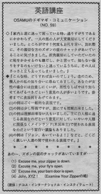

チャックがあいていますが。
While Osamu and his wife were lost, a passing stranger was really kind to them. But his zipper was down. Osamu saw that right when the man was leaving. He didn't want him to be embarrassed and also he thought he shouldn't ignore that problem. He wondered what he should do but the man just left. Usually men will tell each other private things. If you are a woman, it might be embarrassing for you to tell a man this. You can tell his wife ore his friend to tell him. If you are brave, you can tell him quickly and then look away. Or just say his name and point.
家内と道に迷って困っている時、通りすがりであるにかかわらず、一人の男の人が大変親切にしてくださいました。ところがです！何度もお礼を言い、別れ際に、その親切な方のズボンの前のチャックがあいていることに気づきました。折角、親切にしていただいたのに恥をかかせるのも嫌だし、かと言って、知らない振りをするのもいけないと迷っているうちに、その人はさっさと立ち去ってしまいました。
こんな時、どうすれば良いのでしょう。念のため、幾人かの私の知り合いに尋ねて見ました。あなたが女性の場合には注意しにくいが、男性ならばやはり知らせてあげるべきだという意見の人が多いようです。参考までに表現例をあげてみます。 （１）の例はごく一般的な表現です。（２）の例は少し特殊ですが、誰にでも理解出来ました。（３）の例は理解できない人もいました。主に白人種に通じる表現なのだという意見に対して、いやいや人種に関係なくメインランド（米国本土）で使われる表現なのだという面白い議論もありました。 （４）の例は「ジョン、あいているよ！」などと、ごくごく親しい人達の間で使われる表現です。
あの～、ズボンの前のチャックがあいていますが・・・・
(1) Excuse me, your zipper is down.
(2) Excuse me, your fly’s open. (Kind of slang.)
(3) Excuse me, your barn door is open. (Slang)
(4) John, XYZ! (Examine Your Zipperの略）
(Very much slang. Not many people may know this)

| © 1995-2013 NACOS International Institute. All Rights Reserved. |